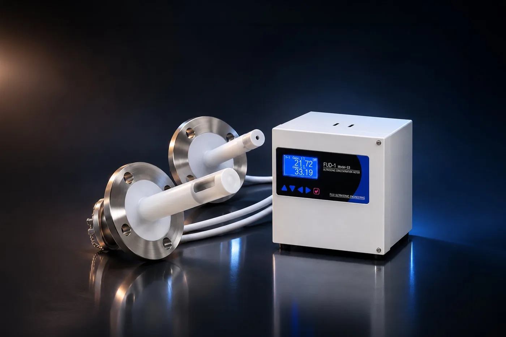

FUD-1 Model-13
Standard
- 측정 원리
- 초음파 음속
- 출력
- 4–20mA · RS232C
패널 장착형(DIN) · 랙형 · 방우 케이스 랙형

약액 속을 지나는 초음파의 전파 속도로 농도를 읽습니다. 가동 부품이 없어 교체할 소모품도, 주기적인 교정도 없습니다. 산·알칼리·유기 용액 어디든, 설치 즉시 실시간 공정 제어에 연결됩니다.
Conc. Meter
Technology
농도계
FUJI Ultrasonic Engineering · FUD-1 Binary Model
인라인 초음파 농도계

약액 속을 지나는 초음파의 전파 속도로 농도를 읽습니다. 가동 부품이 없어 교체할 소모품도, 주기적인 교정도 없습니다. 산·알칼리·유기 용액 어디든, 설치 즉시 실시간 공정 제어에 연결됩니다.
Features
용매 중 1성분(Binary)의 농도를 음속과 온도로 산출. 광학·전도도 방식이 흔들리는 조건에서도 안정적입니다.
가동 부품이 없어 부품 교체와 주기 교정이 필요 없습니다. 설치 시에도 별도 교정이 없습니다.
SUS316L · 하스텔로이 · 티타늄 · 탄탈 · PFA · PTFE · PVDF 등 약액 부식성에 맞춰 선택합니다.
4–20mA · RS232C/RS485 출력, 상·하한 알람, 자기 진단과 페일세이프 모드 내장.
Standard
패널 장착형(DIN) · 랙형 · 방우 케이스 랙형
Explosion-proof
가성소다·화학 플랜트 등 방폭 구역용
FUD-1 Binary Model
| 측정 파라미터 | 초음파 속도 · 온도 |
|---|---|
| 아날로그 출력 | DC 4–20mA (농도 · 옵션 온도) |
| 디지털 출력 | RS232C (옵션 RS485) · 농도/온도/속도/에러 |
| 알람 | 상한 · 하한 · 에러 |
| 전원 | AC 100–240V 50/60Hz · 30VA |
| 사용 환경 | 0–50°C · RH 85% 미만 |
| 적용 약액 예 | NaOH · HCl · NaClO · H₂SO₄ · NH₄OH · HNO₃ |
| 기능 | 오프셋/게인 · 평균 · 자기진단 · 자동 에러 해제 |
정확도·측정 범위·응답 속도는 제조사 페이지에 공개되어 있지 않아 기재하지 않았습니다. 약액별 사양서로 확인이 필요합니다.
출처: FUJI Ultrasonic 제품 페이지